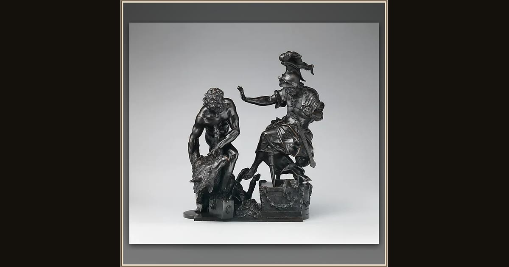

Hercules Delivering the Erymanthean Boar to Eurystheus
François Lespingola · last quarter 17th century · met
Lespingola's bronze shows Hercules with the Erymanthian boar before a recoiling Eurystheus; this is the king whose pursuit forces Heracles' children to flee from city to city. (15) Explore its place in Euripides's Plays, Heracleidae, line 15.